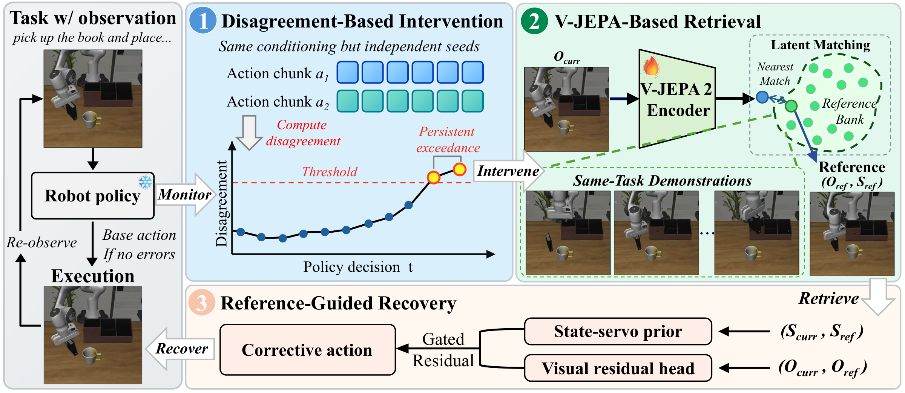
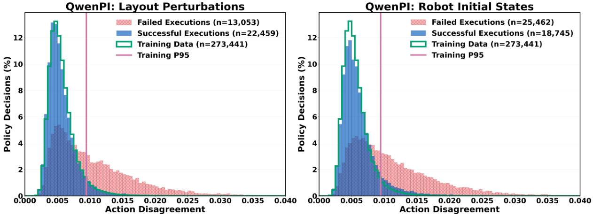
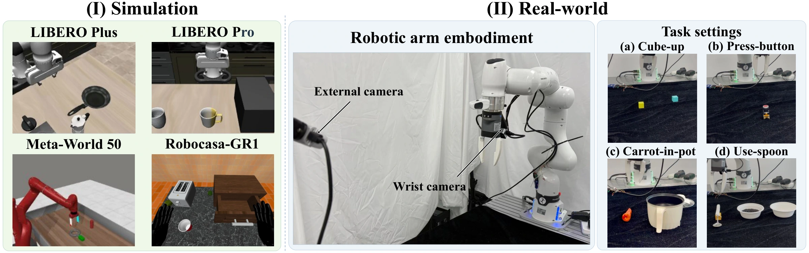
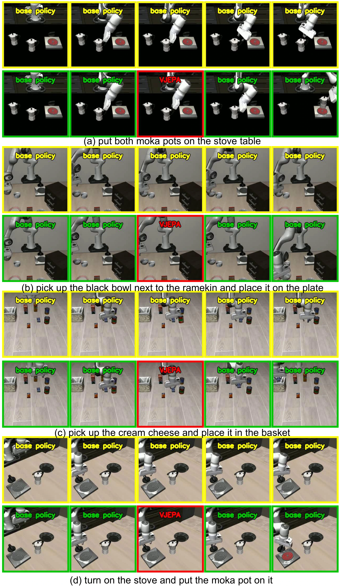
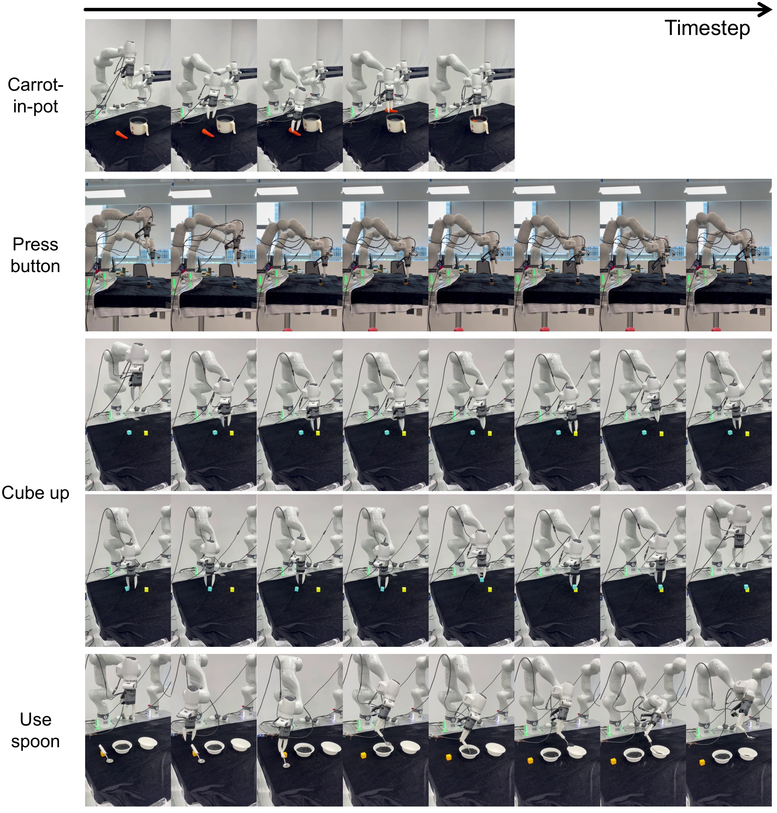

Wait for persistent disagreement.
Sample two action chunks under identical conditioning. Intervene when a training-calibrated disagreement threshold is exceeded at two consecutive decisions.
* Equal contribution.
A capable robot policy can still lose progress after an imperfect grasp, an unexpected contact, or a shifted initial state. RESETTLE adds a recovery layer at the action-execution interface. It detects persistent disagreement between independently sampled action proposals, retrieves a successful same-task demonstration, and executes one reference-guided corrective action before returning control to the base policy.
The base policy stays frozen. Recovery uses a state-servo prior and a guarded visual residual, without additional vision-language reasoning or online trajectory optimization.
Successful demonstrations provide a reference for local recovery. An adapted V-JEPA encoder connects the current observation to these references, and a lightweight controller translates the match into a corrective action.

Sample two action chunks under identical conditioning. Intervene when a training-calibrated disagreement threshold is exceeded at two consecutive decisions.
Match the current visual representation to successful demonstrations. Retrieve the reference observation together with its robot state.
Refine a state-servo prior with a bounded, direction-checked visual residual. Execute one native action, re-observe, and return control to the policy.
Under the same observation and instruction, unstable action choices can signal that a policy needs help. In QwenPI rollouts on LIBERO-Plus, failures show heavier disagreement tails than training-data inference and successful execution.

RESETTLE improves aggregate results on three benchmarks while keeping the original policy weights fixed. Gains are reported in percentage points (pp).
| Base policy | Without recovery | + RESETTLE | Gain |
|---|---|---|---|
| FastWAM | +8.70 pp | ||
| π0.5 | +3.70 pp | ||
| QwenPI | +4.40 pp |
| Base policy | Without recovery | + RESETTLE | Gain |
|---|---|---|---|
| QwenPI | +5.33 pp | ||
| SmolVLA | +6.28 pp |
| Base policy | Without recovery | + RESETTLE | Gain |
|---|---|---|---|
| LDA | +2.09 pp | ||
| QwenGR00T | +6.83 pp |


In the measured QwenPI implementations, RESETTLE reduces monitoring-and-recovery computation by 74.04–93.57% relative to VoLoAgent’s place and grasp branches. RESETTLE produces one action; VoLoAgent plans a trajectory.
Timings cover computation only, excluding nominal policy inference, polling delays, and robot execution.
Within Harness VLA, RESETTLE improves LIBERO-Pro Swap success with the same GPT-5.5 planner and frozen π0.5 policy, evaluated on the same 100 trials.
On a Franka Research 3, one recovery module supports both QwenPI and VLAct across button pressing, cube stacking, object placement, and spoon use. The study includes 320 trials: 20 trials per task for each of four policy configurations. Spoon use measures completion of three stages; the other tasks measure success. The final column averages these four task metrics.

| Policy | Press button Success | Stack cubes Success | Carrot in pot Success | Use spoon Stage completion | Mean task metric |
|---|---|---|---|---|---|
| QwenPI | 90 | 55 | 85 | 36.7 | 66.67 |
| + RESETTLE | 100 | 70 | 95 | 50.0 | 78.75 |
| VLAct | 90 | 85 | 90 | 80.0 | 86.25 |
| + RESETTLE | 100 | 90 | 95 | 86.7 | 92.92 |
The open-source release provides the LIBERO reference implementation: joint recovery-model training, expert goal-bank encoding, an HTTP recovery service, and a guarded single-action executor.
@article{chen2026resettle,
title={RESETTLE: Robotic Recovery through Disagreement-Triggered Retrieval and Efficient Corrective Control},
author={Chen, Yuxin and Yang, Senqiao and Wang, Zixuan and Ye, Jinhui and Lu, Changsheng and Chen, Pengguang and Liu, Shu and Tian, Zhuotao and Jia, Jiaya},
journal={arXiv preprint arXiv:2610.12185},
year={2026}
}